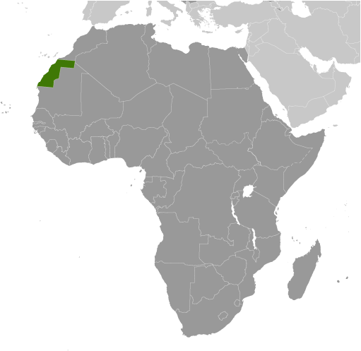
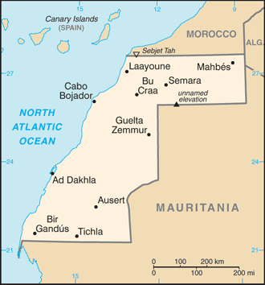
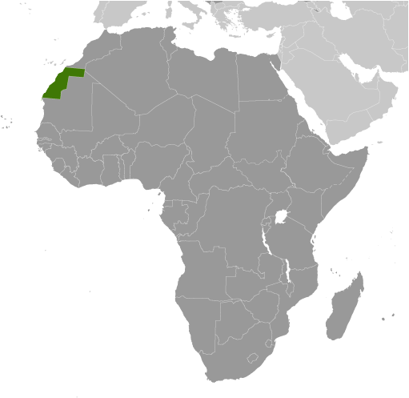
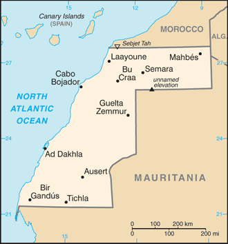

-
Introduction :: Western Sahara
-
Background:Western Sahara is a non-self governing territory on the northwest coast of Africa bordered by Morocco, Mauritania, and Algeria. After Spain withdrew from its former colony of Spanish Sahara in 1976, Morocco annexed the northern two-thirds of Western Sahara and claimed the rest of the territory in 1979, following Mauritania's withdrawal. A guerrilla war with the Polisario Front contesting Morocco's sovereignty ended in a 1991 cease-fire and the establishment of a UN peacekeeping operation. As part of this effort, the UN sought to offer a choice to the peoples of Western Sahara between independence (favored by the Polisario Front) or integration into Morocco. A proposed referendum never took place due to lack of agreement on voter eligibility. The approximately 1,600 km- (almost 1,000 mi-) long defensive sand berm, built by the Moroccans from 1980 to 1987 and running the length of the territory, continues to separate the opposing forces with Morocco controlling the roughly three-quarters of the territory west of the berm. There are periodic ethnic tensions between the native Sahrawi population and Moroccan immigrants. Morocco maintains a heavy security presence in the territory.
-
Geography :: Western Sahara
-
Location:Northern Africa, bordering the North Atlantic Ocean, between Mauritania and MoroccoGeographic coordinates:24 30 N, 13 00 WMap references:AfricaArea:total: 266,000 sq kmland: 266,000 sq kmwater: 0 sq kmcountry comparison to the world: 79Area - comparative:about the size of ColoradoLand boundaries:total: 2,049 kmborder countries (3): Algeria 41 km, Mauritania 1564 km, Morocco 444 kmCoastline:1,110 kmMaritime claims:contingent upon resolution of sovereignty issueClimate:hot, dry desert; rain is rare; cold offshore air currents produce fog and heavy dewTerrain:mostly low, flat desert with large areas of rocky or sandy surfaces rising to small mountains in south and northeastElevation:mean elevation: 256 melevation extremes: -55 m lowest point: Sebjet Tah805 highest point: unnamed elevationNatural resources:phosphates, iron oreLand use:agricultural land: 18.8% (2011 est.)arable land: 0% (2011 est.) / permanent crops: 0% (2011 est.) / permanent pasture: 18.8% (2011 est.)forest: 2.7% (2011 est.)other: 78.5% (2011 est.)Irrigated land:0 sq km (2012)Population distribution:most of the population lives in the two-thirds of the area west of the berm (Moroccan-occupied) that divides the territory; about 40% of that populace resides in LaayouneNatural hazards:hot, dry, dust/sand-laden sirocco wind can occur during winter and spring; widespread harmattan haze exists 60% of time, often severely restricting visibilityEnvironment - current issues:desertification; overgrazing; sparse water and lack of arable landGeography - note:the waters off the coast are particularly rich fishing areas
-
People and Society :: Western Sahara
-
Population:619,551 (July 2018 est.)
note: estimate is based on projections by age, sex, fertility, mortality, and migration; fertility and mortality are based on data from neighboring countries
country comparison to the world: 168Nationality:noun: Sahrawi(s), Sahraoui(s)adjective: Sahrawi, Sahrawian, SahraouianEthnic groups:Arab, BerberLanguages:Standard Arabic, Hassaniya Arabic, Moroccan Arabic, Berber, Spanish, FrenchReligions:MuslimDemographic profile:Western Sahara is a non-self governing territory; approximately 75% is under Moroccan control. It was inhabited almost entirely by Sahrawi pastoral nomads until the mid-20th century. Their traditional vast migratory ranges, based on following unpredictable rainfall, did not coincide with colonial and later international borders. Since the 1930s, most Sahrawis have been compelled to adopt a sedentary lifestyle and to live in urban settings as a result of fighting, the presence of minefields, job opportunities in the phosphate industry, prolonged drought, the closure of Western Sahara’s border with Mauritania from 1979-2002, and the construction of the defensive berm separating Moroccan- and Polisario-controlled (Sahrawi liberalization movement) areas. Morocco supported rapid urbanization to facilitate surveillance and security.
Today more than 80% of Western Sahara’s population lives in urban areas; more than 40% live in the administrative center Laayoune. Moroccan immigration has altered the composition and dramatically increased the size of Western Sahara’s population. Morocco maintains a large military presence in Western Sahara and has encouraged its citizens to settle there, offering bonuses, pay raises, and food subsidies to civil servants and a tax exemption, in order to integrate Western Sahara into the Moroccan Kingdom and, Sahrawis contend, to marginalize the native population.
Western Saharan Sahrawis have been migrating to Europe, principally to former colonial ruler Spain, since the 1950s. Many who moved to refugee camps in Tindouf, Algeria, also have migrated to Spain and Italy, usually alternating between living in cities abroad with periods back at the camps. The Polisario claims that the population of the Tindouf camps is about 155,000, but this figure may include thousands of Arabs and Tuaregs from neighboring countries. Because international organizations have been unable to conduct an independent census in Tindouf, the UNHCR bases its aid on a figure of 90,000 refugees. Western Saharan coastal towns emerged as key migration transit points (for reaching Spain’s Canary Islands) in the mid-1990s, when Spain’s and Italy’s tightening of visa restrictions and EU pressure on Morocco and other North African countries to control illegal migration pushed sub-Saharan African migrants to shift their routes to the south.
Age structure:0-14 years: 36.93% (male 115,703 /female 113,121)15-24 years: 19.49% (male 60,793 /female 59,948)25-54 years: 34.52% (male 105,420 /female 108,462)55-64 years: 5.11% (male 14,773 /female 16,880)65 years and over: 3.95% (male 10,787 /female 13,664) (2018 est.)population pyramid: The World Factbook Field Image ModalAfrica :: Western Sahara Print
The World Factbook Field Image ModalAfrica :: Western Sahara Print Image DescriptionThis is the population pyramid for Western Sahara. A population pyramid illustrates the age and sex structure of a country's population and may provide insights about political and social stability, as well as economic development. The population is distributed along the horizontal axis, with males shown on the left and females on the right. The male and female populations are broken down into 5-year age groups represented as horizontal bars along the vertical axis, with the youngest age groups at the bottom and the oldest at the top. The shape of the population pyramid gradually evolves over time based on fertility, mortality, and international migration trends.
Image DescriptionThis is the population pyramid for Western Sahara. A population pyramid illustrates the age and sex structure of a country's population and may provide insights about political and social stability, as well as economic development. The population is distributed along the horizontal axis, with males shown on the left and females on the right. The male and female populations are broken down into 5-year age groups represented as horizontal bars along the vertical axis, with the youngest age groups at the bottom and the oldest at the top. The shape of the population pyramid gradually evolves over time based on fertility, mortality, and international migration trends.
For additional information, please see the entry for Population pyramid on the Definitions and Notes page under the References tab.Dependency ratios:total dependency ratio: 45 (2015 est.)youth dependency ratio: 41.4 (2015 est.)elderly dependency ratio: 3.7 (2015 est.)potential support ratio: 27.1 (2015 est.)Median age:total: 21.5 yearsmale: 21 yearsfemale: 21.9 years (2018 est.)country comparison to the world: 181Population growth rate:2.64% (2018 est.)country comparison to the world: 17Birth rate:28.9 births/1,000 population (2018 est.)country comparison to the world: 41Death rate:7.9 deaths/1,000 population (2018 est.)country comparison to the world: 95Population distribution:most of the population lives in the two-thirds of the area west of the berm (Moroccan-occupied) that divides the territory; about 40% of that populace resides in LaayouneUrbanization:urban population: 86.7% of total population (2018)rate of urbanization: 2.61% annual rate of change (2015-20 est.)Major urban areas - population:232,000 Laayoune (2018)Sex ratio:at birth: 1.03 male(s)/female (2017 est.)0-14 years: 1.02 male(s)/female (2017 est.)15-24 years: 1.01 male(s)/female (2017 est.)25-54 years: 0.97 male(s)/female (2017 est.)55-64 years: 0.87 male(s)/female (2017 est.)65 years and over: 0.78 male(s)/female (2017 est.)total population: 0.99 male(s)/female (2017 est.)Infant mortality rate:total: 50.5 deaths/1,000 live births (2018 est.)male: 55.3 deaths/1,000 live births (2018 est.)female: 45.6 deaths/1,000 live births (2018 est.)country comparison to the world: 27Life expectancy at birth:total population: 63.8 years (2018 est.)male: 61.4 years (2018 est.)female: 66.2 years (2018 est.)country comparison to the world: 195Total fertility rate:3.79 children born/woman (2018 est.)country comparison to the world: 40HIV/AIDS - adult prevalence rate:NAHIV/AIDS - people living with HIV/AIDS:NAHIV/AIDS - deaths:NA -
Government :: Western Sahara
-
Country name:conventional long form: noneconventional short form: Western Saharaformer: Rio de Oro, Saguia el Hamra, Spanish Saharaetymology: self-descriptive name specifying the territory's western location on the African continent's vast desertGovernment type:legal status of territory and issue of sovereignty unresolved - territory contested by Morocco and Polisario Front (Popular Front for the Liberation of the Saguia el Hamra and Rio de Oro), which in February 1976 formally proclaimed a government-in-exile of the Sahrawi Arab Democratic Republic (SADR), near Tindouf, Algeria, was led by President Mohamed ABDELAZIZ until his death in May 2016; current President Brahim GHALI elected in July 2016; territory partitioned between Morocco and Mauritania in April 1976 when Spain withdrew, with Morocco acquiring northern two-thirds; Mauritania, under pressure from Polisario guerrillas, abandoned all claims to its portion in August 1979; Morocco moved to occupy that sector shortly thereafter and has since asserted administrative control; the Polisario's government-in-exile was seated as an Organization of African Unity (OAU) member in 1984 - Morocco between 1980 and 1987 built a fortified sand berm delineating the roughly 75% of Western Sahara west of the barrier that currently is controlled by Morocco; guerrilla activities continued sporadically until a UN-monitored cease-fire was implemented on 6 September 1991 (Security Council Resolution 690) by the United Nations Mission for the Referendum in Western Sahara (MINURSO)Capital:time difference: UTC 0 (5 hours ahead of Washington, DC, during Standard Time)daylight saving time: +1hr, begins last Sunday in March; ends last Sunday in OctoberAdministrative divisions:none officially; the territory west of the Moroccan berm falls under de facto Moroccan control; Morocco claims the territory of Western Sahara, the political status of which is considered undetermined by the US Government; portions of the regions Guelmim-Es Smara and Laayoune-Boujdour-Sakia El Hamra, as claimed by Morocco, lie within Western Sahara; Morocco also claims Oued Eddahab-Lagouira, another region that falls entirely within Western SaharaSuffrage:none; (residents of Moroccan-controlled Western Sahara participate in Moroccan elections)Executive branch:noneInternational organization participation:AU, CAN (observer), WFTU (NGOs)Diplomatic representation in the US:noneDiplomatic representation from the US:none
-
Economy :: Western Sahara
-
Economy - overview:
Western Sahara has a small market-based economy whose main industries are fishing, phosphate mining, tourism, and pastoral nomadism. The territory's arid desert climate makes sedentary agriculture difficult, and much of its food is imported. The Moroccan Government administers Western Sahara's economy and is a key source of employment, infrastructure development, and social spending in the territory.
Western Sahara's unresolved legal status makes the exploitation of its natural resources a contentious issue between Morocco and the Polisario. Morocco and the EU in December 2013 finalized a four-year agreement allowing European vessels to fish off the coast of Morocco, including disputed waters off the coast of Western Sahara. As of April 2018, Moroccan and EU authorities were negotiating an amendment to renew the agreement.
Oil has never been found in Western Sahara in commercially significant quantities, but Morocco and the Polisario have quarreled over rights to authorize and benefit from oil exploration in the territory. Western Sahara's main long-term economic challenge is the development of a more diverse set of industries capable of providing greater employment and income to the territory. However, following King MOHAMMED VI’s November 2015 visit to Western Sahara, the Government of Morocco announced a series of investments aimed at spurring economic activity in the region, while the General Confederation of Moroccan Enterprises announced a $609 million investment initiative in the region in March 2015.
GDP (purchasing power parity):$906.5 million (2007 est.)country comparison to the world: 205GDP (official exchange rate):NAGDP - real growth rate:NA
GDP - per capita (PPP):$2,500 (2007 est.)country comparison to the world: 198GDP - composition, by sector of origin:agriculture: NA (2007 est.)industry: NA (2007 est.)services: 40% (2007 est.)Agriculture - products:fruits and vegetables (grown in the few oases); camels, sheep, goats (kept by nomads); fishIndustries:phosphate mining, handicraftsIndustrial production growth rate:NALabor force:144,000 (2010 est.)country comparison to the world: 178Labor force - by occupation:agriculture: 50%industry: 50%industry and services: 50% (2005 est.)Unemployment rate:NA
Population below poverty line:NABudget:revenues: NAexpenditures: NATaxes and other revenues:NABudget surplus (+) or deficit (-):NAFiscal year:calendar yearInflation rate (consumer prices):NA
Exports:NA
Exports - commodities:phosphates 62% (2012 est.)Imports:NA
Imports - commodities:fuel for fishing fleet, foodstuffsDebt - external:NA
Exchange rates:Moroccan dirhams (MAD) per US dollar -9.639 (2017 est.)9.7351 (2016 est.)9.7351 (2015)9.7351 (2014 est.)8.3798 (2013 est.) -
Energy :: Western Sahara
-
Electricity - production:0 kWh NA (2016 est.)country comparison to the world: 220Electricity - consumption:0 kWh (2016 est.)country comparison to the world: 219Electricity - exports:0 kWh (2016 est.)country comparison to the world: 218Electricity - imports:0 kWh (2016 est.)country comparison to the world: 218Electricity - installed generating capacity:58,000 kW (2016 est.)country comparison to the world: 188Electricity - from fossil fuels:100% of total installed capacity (2016 est.)country comparison to the world: 22Electricity - from nuclear fuels:0% of total installed capacity (2017 est.)country comparison to the world: 212Electricity - from hydroelectric plants:0% of total installed capacity (2017 est.)country comparison to the world: 214Electricity - from other renewable sources:0% of total installed capacity (2017 est.)country comparison to the world: 214Crude oil - production:0 bbl/day (2017 est.)country comparison to the world: 215Crude oil - exports:0 bbl/day (2015 est.)country comparison to the world: 216Crude oil - imports:0 bbl/day (2015 est.)country comparison to the world: 216Crude oil - proved reserves:0 bbl (1 January 2018 est.)country comparison to the world: 213Refined petroleum products - production:0 bbl/day (2015 est.)country comparison to the world: 216Refined petroleum products - consumption:1,700 bbl/day (2016 est.)country comparison to the world: 197Refined petroleum products - exports:0 bbl/day (2015 est.)country comparison to the world: 216Refined petroleum products - imports:1,702 bbl/day (2015 est.)country comparison to the world: 193Natural gas - production:0 cu m (2017 est.)country comparison to the world: 215Natural gas - consumption:0 cu m (2017 est.)country comparison to the world: 214Natural gas - exports:0 cu m (2017 est.)country comparison to the world: 213Natural gas - imports:0 cu m (2017 est.)country comparison to the world: 213Natural gas - proved reserves:0 cu m (1 January 2014 est.)country comparison to the world: 208Carbon dioxide emissions from consumption of energy:268,400 Mt (2017 est.)country comparison to the world: 194
-
Communications :: Western Sahara
-
Telephone system:general assessment: sparse and limited system (2015)international: country code - 212; tied into Morocco's system by microwave radio relay, tropospheric scatter, and satellite; satellite earth stations - 2 Intelsat (Atlantic Ocean) linked to Rabat, Morocco (2015)Broadcast media:Morocco's state-owned broadcaster, Radio-Television Marocaine (RTM), operates a radio service from Laayoune and relays TV service; a Polisario-backed radio station also broadcasts (2008)Internet country code:.eh
-
Transportation :: Western Sahara
-
Airports:6 (2013)country comparison to the world: 178Airports - with paved runways:total: 3 (2013)2,438 to 3,047 m: 3 (2013)Airports - with unpaved runways:total: 3 (2013)1,524 to 2,437 m: 1 (2013)914 to 1,523 m: 1 (2013)under 914 m: 1 (2013)Ports and terminals:major seaport(s): Ad Dakhla, Laayoune (El Aaiun)
-
Transnational Issues :: Western Sahara
-
Disputes - international:no country has recognized Morocco’s claim to the Western Saharaseveral states have extended diplomatic relations to the "Sahrawi Arab Democratic Republic" represented by the Polisario Front in exile in Algeriamore than 100,000 Sahrawi refugees continue to be sheltered in camps in Tindouf, Algeria, which has hosted Sahrawi refugees since the 1980s
Africa ::
Western Sahara